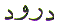

The Arabic Letter
Waw ( ) is equivalent to the letter 'W'
in the English alphabet. It is letter number 26 in the Arabic
character set. Waw (
) is equivalent to the letter 'W'
in the English alphabet. It is letter number 26 in the Arabic
character set. Waw ( ) in Arabic numerology,
which is known as Abjad, has the value of 6. This article is about
the spiritual meaning of the letter Waw (
) in Arabic numerology,
which is known as Abjad, has the value of 6. This article is about
the spiritual meaning of the letter Waw ( ).
).
Wadood  - Loving is one
of the Attributes of Allah.
- Loving is one
of the Attributes of Allah.
The word Wadood  - Loving is WoodWood- Love. Love has
two parts. And Love and Love + becomes
- Loving is WoodWood- Love. Love has
two parts. And Love and Love + becomes  Wadood - Loving. Love is something that is not visible.
Love is something that is shared between two. We cannot measure
love, but we can see the effects of love. A seeker in search of
Allah embarks on this course for no other reason than Love for
his Creator. So that he may share his Love with Allah. When we
first start seeking Allah, Allah will test our love for Him with
hardships. These hardships can be as different as the number of
different seekers. There are numerous examples in the Quran, but
we shall just look at one example.
Wadood - Loving. Love is something that is not visible.
Love is something that is shared between two. We cannot measure
love, but we can see the effects of love. A seeker in search of
Allah embarks on this course for no other reason than Love for
his Creator. So that he may share his Love with Allah. When we
first start seeking Allah, Allah will test our love for Him with
hardships. These hardships can be as different as the number of
different seekers. There are numerous examples in the Quran, but
we shall just look at one example.
In the case of Ibraheem
( ) :
) :
What were these certain commands which Ibraheem ( )
fulfilled ? These commands were to leave his wife and son Ismaeel
(
)
fulfilled ? These commands were to leave his wife and son Ismaeel
( ) in the desert, in Allah's care.
Then after that, Allah asked Ibraheem (
) in the desert, in Allah's care.
Then after that, Allah asked Ibraheem ( )
to sacrifice that which was most dear to him. And the dearest
thing to Ibraheem (
)
to sacrifice that which was most dear to him. And the dearest
thing to Ibraheem ( ) was his son Ismaeel
(
) was his son Ismaeel
( ). So Ibraheem (
). So Ibraheem ( )
offered his son to Allah as a sacrifice. And, Allah accepted his
sacrifice and preserved Ismaeel (
)
offered his son to Allah as a sacrifice. And, Allah accepted his
sacrifice and preserved Ismaeel ( )
at the last minute. Why did Allah do that ?
)
at the last minute. Why did Allah do that ?
Because Allah is Al Ghafoor ul Wadood And He is the Forgiving, the Loving. Allah tested Ibraheem's ( ) love for his Rabb. And when Ibraheem
(
) love for his Rabb. And when Ibraheem
( ) gave up that which he loved most
for the sake of Allah, Allah restored his son and reciprocated
that Love.
) gave up that which he loved most
for the sake of Allah, Allah restored his son and reciprocated
that Love.
The moral is that Love is shared between two. If the Love of one is not reciprocated by the other it becomes a trial. When the other responds with Love, it becomes bliss.
A good example of the
effects of love are described beautifully in the book Layla and Majnun by Nizami. Layla and Majnun as a story is wonderful from a worldly point of
view. But if we consider this book from a spiritual point of view
we find that all the Messengers of Allah ( )
and Awliya Allah (
)
and Awliya Allah ( ) went through the
same process. They gave up everything for the sake of Allah's
Love.
) went through the
same process. They gave up everything for the sake of Allah's
Love.
And after trying them, Allah returned, or bestowed His Love on them.
That means we have to believe and be loving towards others for the sake of Allah. Everyone one of us, is His creation. Allah Himself will reciprocate our love for others. Another word for Love in Arabic is Hubb.
In the case of Muhammad , Allah bestowed on him the Title: Habeeb Allah
, Allah bestowed on him the Title: Habeeb Allah  - The Beloved of
Allah. There is a subtlety in this Title. All the creation that
seeks Allah pleasure is in Love with Allah. In the case of Muhammad
- The Beloved of
Allah. There is a subtlety in this Title. All the creation that
seeks Allah pleasure is in Love with Allah. In the case of Muhammad , Allah is in Love with Muhammad
, Allah is in Love with Muhammad .
Hence the reference in the Quran:
.
Hence the reference in the Quran:
What do we call these Blessings mentioned in the above reference (Chapter 33 Verse 56) ? We call these Blessings Darood . In the word Darood there is the word Wood - Love.
Now if we look at the
word Mahmood Highest in Maqamam Mahmood - Highest Station and the name
of the Person destined for that rank  Muhammad
Muhammad
 , we find that the name Muhammad
, we find that the name Muhammad  becomes Mahmood if we add the Letter Waw (
becomes Mahmood if we add the Letter Waw ( )
between the second Meem (
)
between the second Meem ( ) and
the Letter Dal (
) and
the Letter Dal ( ). Therefore the
name Muhammad
). Therefore the
name Muhammad  becomes
Mahmood which ends with Wood -
Love. This reference of Maqamam
Mahmood is mentioned
in the Prayer that is said after the Azan -
Call to Prayer. Before mentioning Maqamam Mahmood
in the Prayer, there is another
title of Muhammad
becomes
Mahmood which ends with Wood -
Love. This reference of Maqamam
Mahmood is mentioned
in the Prayer that is said after the Azan -
Call to Prayer. Before mentioning Maqamam Mahmood
in the Prayer, there is another
title of Muhammad that starts with
the Letter Waw (
that starts with
the Letter Waw ( ) which is mentioned
first. That is Wasila - Rights of intercession.
) which is mentioned
first. That is Wasila - Rights of intercession.
Waseet is an intercessor.
On the Day of Resurrection, Muhammad will be asked to intercede for his community. And that promise
of being a Waseet - Intercessor
has already been made by Allah to His Beloved Muhammad
will be asked to intercede for his community. And that promise
of being a Waseet - Intercessor
has already been made by Allah to His Beloved Muhammad .
.
Muhammad,Rasool Allah said:
said:
Waqt is Time. Satan or Iblees is granted respite until the appointed Waqt - Time in the above verse. Waqt - Time is one of the many things that man would like to control. But it is elusive. We cannot touch or hold time, we cannot taste time, we cannot see time, we cannot hear time and we definitely cannot smell time. Time is an elusive concept. It cannot be grasped. It cannot be turned back. So most people live for today without a care for tomorrow. In Islam it is the 'tomorrow' that matters. Since Iblees has been granted respite for an appointed time, he makes us waste our allocated Waqt Time by keeping us busy with worldly matters and turning us away from seeking Allah's bounty.
Therefore we must put aside some Waqt - Time per day for Tawba - Repentance and seeking Allah's bounty. We have to put aside some good deeds for which the payment is not immediately obvious. But nevertheless, these good deeds of today will be counted 'tomorrow'.
| HOME |